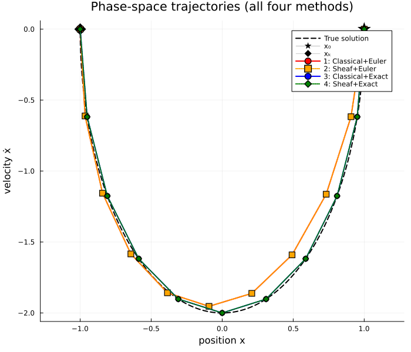
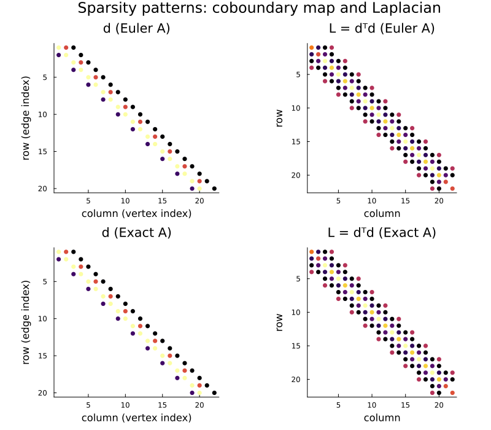
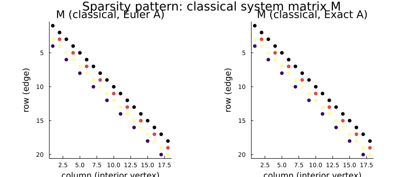

Spring Oscillator: Four Colocation Methods Compared
This example compares four methods for solving the two-point boundary-value problem (BVP) of the harmonic oscillator in phase space:
| Euler time-stepping | Exact matrix exponential | |
|---|---|---|
| Classical (direct linear system) | Method 1 | Method 3 |
Sheaf (TrajectorySheaf API) | Method 2 | Method 4 |
The "classical" approach builds the block-bidiagonal constraint matrix M directly and solves via QR. The "sheaf" approach uses the TrajectorySheaf + colocation_trajectory API, which internally builds the sheaf Laplacian and solves the Dirichlet harmonic extension $L_{II} x_I = -L_{IB} x_B$.
For the same dynamics matrix, both approaches solve an equivalent linear system: classical solves $\min\|M x_I - b\|$ (via QR), while the sheaf approach solves $M^\top M\, x_I = M^\top b$ (i.e.\ the normal equations, via Cholesky on $L_{II} = M^\top M$). The two methods should therefore agree up to floating-point rounding, and any visible difference in trajectory accuracy comes entirely from the choice of dynamics matrix (Euler vs.\ exact).
After solving, this page shows:
- a phase-space plot of all four trajectories alongside the true solution,
- quantitative residual and endpoint-error metrics,
- sparsity patterns of the coboundary map $d$ and Laplacian $L$ for each dynamics matrix,
- condition numbers of the linear systems that each method must solve.
using CellularSheaves
using LinearAlgebra
using SparseArrays
using BlockArrays
using PlotsProblem setup: spring oscillator in phase space
The equation of motion $x''(t) = -\omega^2 x(t)$ in phase-space state $q = [x,\;\dot{x}]^\top$ becomes $\dot{q} = J q$ with
\[ J = \begin{pmatrix} 0 & 1 \\ -\omega^2 & 0 \end{pmatrix}.\]
We solve the BVP over half a period: from maximum displacement back to minimum displacement.
ω = 2.0
J = [0.0 1.0; -ω^2 0.0]
N = 20 # steps per full period
T_period = 2π / ω
h = T_period / N # step size
k = N ÷ 2 # 10 steps = half period
d = 2 # state dimension2Dynamics matrices
Exact (matrix exponential):
\[ A_{\text{exact}} = e^{hJ} = \begin{pmatrix} \cos\omega h & \sin\omega h/\omega \\ -\omega\sin\omega h & \cos\omega h \end{pmatrix}\]
Euler (first-order approximation):
\[ A_{\text{euler}} = I + h J\]
A_exact = [cos(ω*h) sin(ω*h)/ω; -ω*sin(ω*h) cos(ω*h)]
A_euler = Matrix{Float64}(I + h * J)
@assert norm(A_exact - exp(h * J)) < 1e-12 # verify closed-form formulaBoundary conditions
We start at maximum displacement ($q_0 = [1, 0]$) and pin the final state to the exact half-period endpoint ($q_k = A_{\text{exact}}^k q_0 \approx [-1, 0]$). Using the exact endpoint as both boundary conditions ensures that the four methods solve the same BVP; deviations in interior states then reflect only the choice of dynamics matrix.
x0 = [1.0, 0.0]
xk = A_exact^k * x0
println("BVP: x0 = ", round.(x0; digits=6), " → xk = ", round.(xk; digits=6))BVP: x0 = [1.0, 0.0] → xk = [-1.0, -0.0]Helper functions
classical_colocation: direct block-bidiagonal solve
Given a dynamics matrix A, boundary conditions (x0, xk), state dimension d, and number of steps k, this function builds the overdetermined system
\[ \underbrace{\begin{pmatrix} I \\ -A & I \\ & \ddots & \ddots \\ & & -A & I \\ & & & -A \end{pmatrix}}_{M \in \mathbb{R}^{kd \times (k-1)d}} x_{\text{int}} = \underbrace{\begin{pmatrix} A x_0 \\ 0 \\ \vdots \\ 0 \\ x_k \end{pmatrix}}_{b}\]
and returns both the full $(k+1)$-step trajectory matrix (columns = time steps) and the matrix M itself (for sparsity/condition-number analysis).
function classical_colocation(A::Matrix{Float64}, x0, xk, d::Int, k::Int)
n_int = k - 1
M = zeros(k * d, n_int * d)
b = zeros(k * d)
for t in 0:k-1
rows = t*d+1 : (t+1)*d
if t + 1 <= k - 1 # x_{t+1} is interior
M[rows, t*d+1:(t+1)*d] .-= I(d)
else # x_k is boundary: move -I*xk to RHS → b += xk
b[rows] .+= xk
end
if t >= 1 # x_t is interior
M[rows, (t-1)*d+1:t*d] .+= A
else # x_0 is boundary: move +A*x0 to RHS → b -= A*x0
b[rows] .-= A * x0
end
end
q_int = M \ b
traj = hcat(x0, reshape(q_int, d, n_int), xk)
return traj, M
endclassical_colocation (generic function with 1 method)sheaf_colocation: harmonic-extension solve
Builds a TrajectorySheaf with the given dynamics matrix A and calls colocation_trajectory. Returns the same $d \times (k+1)$ trajectory matrix together with the trajectory sheaf object (for Laplacian/coboundary analysis).
function sheaf_colocation(A::Matrix{Float64}, x0, xk, d::Int, k::Int)
F = EuclideanSheaf{Float64}(fill(d, 1))
ts = TrajectorySheaf(F, A, k)
bv = colocation_trajectory(ts, x0, xk)
traj = hcat([Array(bv[Block(t)]) for t in 1:k+1]...)
return traj, ts
endsheaf_colocation (generic function with 1 method)dyn_residual: maximum step-wise dynamics residual
Measures how well the trajectory satisfies the exact forward dynamics $q_{t+1} = A_{\text{exact}} q_t$:
function dyn_residual(traj::Matrix, A_ref::Matrix)
k = size(traj, 2) - 1
return maximum(norm(traj[:, t+1] - A_ref * traj[:, t]) for t in 1:k)
enddyn_residual (generic function with 1 method)Solve all four method combinations
traj1, M_euler = classical_colocation(A_euler, x0, xk, d, k)
traj2, ts_euler = sheaf_colocation(A_euler, x0, xk, d, k)
traj3, M_exact = classical_colocation(A_exact, x0, xk, d, k)
traj4, ts_exact = sheaf_colocation(A_exact, x0, xk, d, k)([1.0 0.9510565162951542 … -0.9510565162951539 -0.9999999999999993; 0.0 -0.6180339887498949 … -0.618033988749896 -5.551115123125783e-16], TrajectorySheaf{Float64}(10, [0.9510565162951535 0.1545084971874737; -0.6180339887498948 0.9510565162951535], A network sheaf with 11 vertex stalks and 10 edge stalks.
))Phase-space plot
The true solution is the half-period arc of the exact harmonic oscillator. Methods 3 and 4 (exact A) land on top of this arc; the Euler methods (1 and 2) cut inward because the forward-Euler map $I + h J$ contracts the orbit. Note that methods 1 and 2 produce identical trajectories (orange dots cover the red circles), as do methods 3 and 4 (green dots cover the blue circles), confirming that the sheaf and classical formulations solve the same underlying BVP.
t_fine = range(0, T_period / 2; length=300)
x_true = cos.(ω .* t_fine)
v_true = -ω .* sin.(ω .* t_fine)300-element Vector{Float64}:
-0.0
-0.021013611037872387
-0.04202490225695083
-0.06303155409454013
-0.08403124750011429
-0.10502166419133041
-0.12600048690995785
-0.1469653996776943
-0.16791408805184047
-0.18884423938080538
⋮
-0.1679140880518403
-0.14696539967769406
-0.12600048690995758
-0.10502166419133094
-0.08403124750011476
-0.06303155409454056
-0.0420249022569512
-0.021013611037872693
-2.4492935982947064e-16Build all 7 series in one plot call for robust headless rendering:
xs_all = [x_true, [x0[1]], [xk[1]],
traj1[1,:], traj2[1,:], traj3[1,:], traj4[1,:]]
vs_all = [v_true, [x0[2]], [xk[2]],
traj1[2,:], traj2[2,:], traj3[2,:], traj4[2,:]]
phase_plot = plot(xs_all, vs_all;
label = ["True solution" "x₀" "xₖ" "1: Classical+Euler" "2: Sheaf+Euler" "3: Classical+Exact" "4: Sheaf+Exact"],
lw = [2 0 0 2 2 2 2],
linestyle = [:dash :solid :solid :solid :dot :solid :dot],
color = [:black :black :black :red :orange :blue :green],
marker = [:none :star5 :diamond :circle :square :circle :diamond],
markersize = [0 12 10 5 5 5 5],
xlabel = "position x",
ylabel = "velocity ẋ",
title = "Phase-space trajectories (all four methods)",
legend = :topright,
aspect_ratio = :equal,
size = (700, 600))
phase_plot
Quantitative error analysis
We report two metrics for each method:
- Dynamics residual $\max_t \|q_{t+1} - A_{\text{exact}}\,q_t\|$ (how faithfully the trajectory obeys the true ODE);
- Endpoint error $\max(\|q_0 - x_0\|, \|q_k - x_k\|)$ (how well the boundary conditions are satisfied).
function endpoint_error(traj, x0, xk)
return max(norm(traj[:,1] - x0), norm(traj[:,end] - xk))
end
methods = ["1: Classical + Euler", "2: Sheaf + Euler",
"3: Classical + Exact", "4: Sheaf + Exact"]
trajs = [traj1, traj2, traj3, traj4]
dr_vals = [dyn_residual(t, A_exact) for t in trajs]
ee_vals = [endpoint_error(t, x0, xk) for t in trajs]
dr_strs = [string(round(v; sigdigits=4)) for v in dr_vals]
ee_strs = [string(round(v; sigdigits=4)) for v in ee_vals]
col1 = max(length("Method"), maximum(length, methods))
col2 = max(length("Dyn. residual"), maximum(length, dr_strs))
col3 = max(length("Endpoint error"), maximum(length, ee_strs))
println(rpad("Method", col1), " | ", rpad("Dyn. residual (wrt exact A)", col2), " | ", "Endpoint error")
println(repeat("-", col1), "-+-", repeat("-", col2), "-+-", repeat("-", col3))
for (lbl, dr, ee) in zip(methods, dr_strs, ee_strs)
println(rpad(lbl, col1), " | ", rpad(dr, col2), " | ", ee)
endMethod | Dyn. residual (wrt exact A) | Endpoint error
---------------------+---------------+---------------
1: Classical + Euler | 0.05777 | 0.0
2: Sheaf + Euler | 0.05777 | 0.0
3: Classical + Exact | 1.18e-15 | 0.0
4: Sheaf + Exact | 1.196e-15 | 0.0Interpretation:
- Methods 1 and 2 (Euler) produce large dynamics residuals (~O(h) per step) because $A_{\text{euler}} \neq A_{\text{exact}}$.
- Methods 3 and 4 (exact A) achieve machine-epsilon residuals.
- Methods 1 and 3 (classical QR) agree with their sheaf counterparts 2 and 4 (normal equations / Cholesky) up to floating-point rounding, confirming that the sheaf formulation is solving the same problem.
- All four methods satisfy the boundary conditions to full machine precision by construction (harmonic extension and classical least-squares both pin the boundary vertices exactly when the system is consistent).
Sparsity patterns
Coboundary map and Laplacian of the trajectory sheaf
The coboundary map $d$ of the trajectory sheaf has block structure $kd \times (k+1)d$. Each $d \times 2d$ block row for edge $(t, t+1)$ has the form $[+A \mid -I]$, i.e.\ $(d\,x)_e = A x_t - x_{t+1}$, enforcing $A x_t - x_{t+1} = 0$ for global sections.
The Laplacian $L = d^\top d$ is block-tridiagonal of size $(k+1)d \times (k+1)d$.
We show sparsity patterns for both dynamics matrices side-by-side.
function get_coboundary(ts::TrajectorySheaf)
return sparse(coboundary_map(ts.sheaf))
end
function get_laplacian(ts::TrajectorySheaf)
d_F = get_coboundary(ts)
return d_F' * d_F
end
d_euler = get_coboundary(ts_euler)
L_euler = get_laplacian(ts_euler)
d_exact = get_coboundary(ts_exact)
L_exact = get_laplacian(ts_exact)
spy_d_euler = spy(d_euler; title="d (Euler A)", marker=(:circle, 4), legend=false,
xlabel="column (vertex index)", ylabel="row (edge index)")
spy_L_euler = spy(L_euler; title="L = dᵀd (Euler A)", marker=(:circle, 4), legend=false,
xlabel="column", ylabel="row")
spy_d_exact = spy(d_exact; title="d (Exact A)", marker=(:circle, 4), legend=false,
xlabel="column (vertex index)", ylabel="row (edge index)")
spy_L_exact = spy(L_exact; title="L = dᵀd (Exact A)", marker=(:circle, 4), legend=false,
xlabel="column", ylabel="row")
sparsity_plot = plot(spy_d_euler, spy_L_euler, spy_d_exact, spy_L_exact;
layout=(2, 2), size=(800, 700),
plot_title="Sparsity patterns: coboundary map and Laplacian")
sparsity_plot
Classical system matrix M
The classical block-bidiagonal matrix $M \in \mathbb{R}^{kd \times (k-1)d}$ is the coboundary map $d$ with the two boundary columns (for vertices 1 and $k+1$) removed. Consequently $M^\top M = L_{II}$, the interior-interior block of the Laplacian. This equality establishes that the classical QR solve and the sheaf Cholesky solve are two numerical paths to the same linear system.
We verify this numerically: the relative difference $\|M^\top M - L_{II}\|_\infty / \|L_{II}\|_\infty$ should be at most $\sqrt{\varepsilon_{\text{mach}}} \approx 10^{-8}$.
function interior_laplacian(ts::TrajectorySheaf, d::Int, k::Int)
L = Matrix(get_laplacian(ts))
int_idx = d+1 : k*d
return L[int_idx, int_idx]
end
L_II_euler = interior_laplacian(ts_euler, d, k)
L_II_exact = interior_laplacian(ts_exact, d, k)
MtM_euler = M_euler' * M_euler
MtM_exact = M_exact' * M_exact
rel_err_euler = norm(MtM_euler - L_II_euler, Inf) / norm(L_II_euler, Inf)
rel_err_exact = norm(MtM_exact - L_II_exact, Inf) / norm(L_II_exact, Inf)
println("‖M'M - L_II‖_∞ / ‖L_II‖_∞ (Euler A): ", rel_err_euler)
println("‖M'M - L_II‖_∞ / ‖L_II‖_∞ (Exact A): ", rel_err_exact)
@assert rel_err_euler ≤ sqrt(eps()) "M'M ≠ L_II for Euler A (rel err = $rel_err_euler)"
@assert rel_err_exact ≤ sqrt(eps()) "M'M ≠ L_II for Exact A (rel err = $rel_err_exact)"
spy_M_euler = spy(sparse(M_euler); title="M (classical, Euler A)", marker=(:circle, 4),
legend=false, xlabel="column (interior vertex)", ylabel="row (edge)")
spy_M_exact = spy(sparse(M_exact); title="M (classical, Exact A)", marker=(:circle, 4),
legend=false, xlabel="column (interior vertex)", ylabel="row (edge)")
classical_spy = plot(spy_M_euler, spy_M_exact; layout=(1, 2), size=(800, 350),
plot_title="Sparsity pattern: classical system matrix M")
classical_spy
Condition numbers
Three related condition numbers characterize the difficulty of each solve:
- $\kappa(M)$ — for the classical QR path (scales with $\sqrt{\kappa(L_{II})}$).
- $\kappa(M^\top M) = \kappa(L_{II})$ — for the sheaf Cholesky path.
- Squaring the condition number when moving from QR to the normal equations is a well-known source of numerical instability; the sheaf Laplacian approach is therefore potentially less stable than classical QR for ill-conditioned problems.
κ_M_euler = cond(M_euler)
κ_M_exact = cond(M_exact)
κ_LII_euler = cond(L_II_euler)
κ_LII_exact = cond(L_II_exact)
κ_ratio_e = κ_LII_euler / κ_M_euler^2
κ_ratio_x = κ_LII_exact / κ_M_exact^2
row_labels = ["κ(M) [QR]", "κ(L_II) [Cholesky]", "κ(L_II)/κ(M)²"]
vals_euler = [round(κ_M_euler; sigdigits=4), round(κ_LII_euler; sigdigits=4), round(κ_ratio_e; sigdigits=3)]
vals_exact = [round(κ_M_exact; sigdigits=4), round(κ_LII_exact; sigdigits=4), round(κ_ratio_x; sigdigits=3)]
r_strs = string.(vals_euler); x_strs = string.(vals_exact)
rc1 = max(length("Solver"), maximum(length, row_labels))
rc2 = max(length("Euler A"), maximum(length, r_strs))
rc3 = max(length("Exact A"), maximum(length, x_strs))
println(rpad("Solver", rc1), " | ", rpad("Euler A", rc2), " | ", "Exact A")
println(repeat("-", rc1), "-+-", repeat("-", rc2), "-+-", repeat("-", rc3))
for (lbl, ve, vx) in zip(row_labels, r_strs, x_strs)
println(rpad(lbl, rc1), " | ", rpad(ve, rc2), " | ", vx)
endSolver | Euler A | Exact A
-------------------+---------+--------
κ(M) [QR] | 10.13 | 10.27
κ(L_II) [Cholesky] | 102.5 | 105.5
κ(L_II)/κ(M)² | 1.0 | 1.0Observations:
- $\kappa(L_{II}) \approx \kappa(M)^2$ (within floating-point noise), confirming that the sheaf Cholesky path squares the condition number relative to classical QR.
- For the harmonic oscillator, both methods have modest condition numbers ($k = 10$ steps with $\omega = 2$), so both approaches are numerically reliable in this example.
- For longer time horizons or near-unitary $A$ (where $L_{II}$ is nearly singular), preferring QR on the coboundary map $d$ over Cholesky on $L$ can recover up to half the digits of precision.
Summary
| Method | Euler A dyn. residual | Exact A dyn. residual |
|---|---|---|
| Classical (QR on M) | ≈ 0.058 (O(h)) | ~1e-15 (machine ε) |
| Sheaf (Cholesky on L_II) | ≈ 0.058 (O(h)) | ~1e-15 (machine ε) |
The sheaf API provides a clean, reusable abstraction over the classical block-bidiagonal construction — the two approaches differ only in their numerical path (QR vs Cholesky) while solving the identical BVP. The choice of dynamics matrix (Euler vs exact exponential) is the dominant source of trajectory error and is orthogonal to the colocation method.